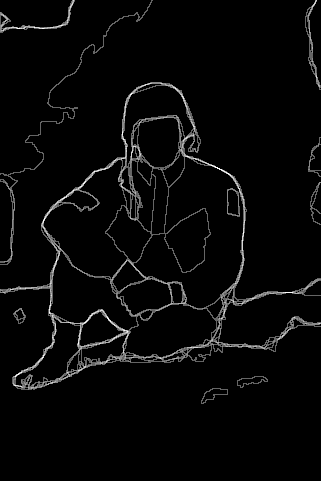
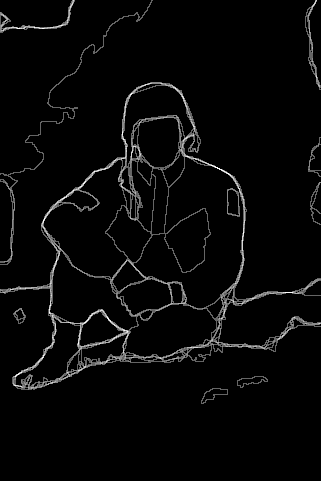
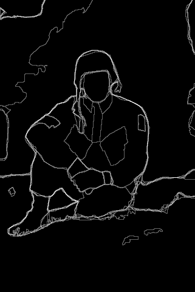
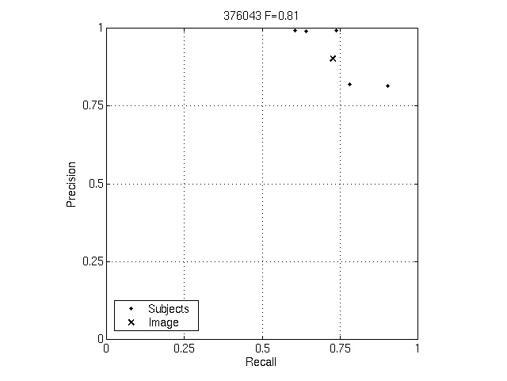
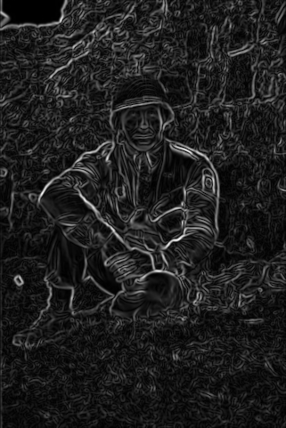
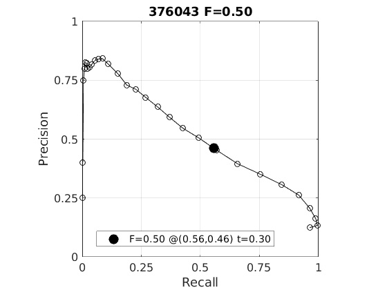
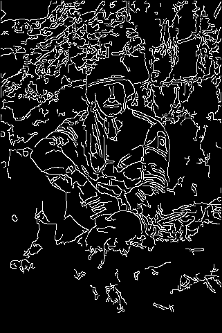
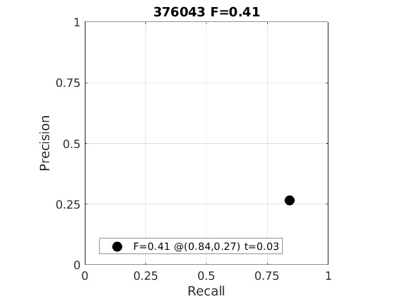

| Rank | Score | Algorithm |
|---|---|---|
| 0 | 0.81 | Humans |
| 1 | 0.50 | Sobel Filter |
| 2 | 0.41 | Canny Filter |

| Rank Algorithm (Score) | Pb | Precision/Recall |
|---|---|---|
| 0 Humans (0.81) |
 | |
| 1 Sobel Filter (0.50) |
 |  |
| 2 Canny Filter (0.41) |
 |  |
Page generated on 09-Nov-2020 19:38:15.